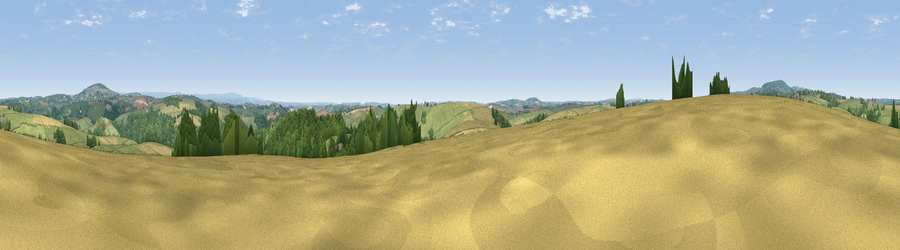

Viewpoint near Quethiock
#21859 in England · top 40% of its area beats it · near Quethiock · access?Where it is
The exact computed spot (SX 32925 65775). Click the marker for map links.
Public access: no public right of way or access land is recorded at this exact spot — it may be on private land. Computed from Natural England's CRoW access layer and OpenStreetMap rights of way — not the legal definitive map. Always verify locally.
The view, rendered

A 360° render of this exact spot computed from the terrain model, tree cover and land cover — summer colours, afternoon light, calibrated against photographs of famous viewpoints. Real trees, hedges and buildings will differ in detail.
The panorama
Grey silhouette: terrain skyline in each direction (720 bearings, Earth curvature and refraction included). Dashed green: skyline with trees (+15 m) and buildings (+8 m) as obstacles. Blue strip: how far the ground is visible on each bearing.
Where the view opens
Wedge length = distance to the farthest visible ground on that bearing (vegetation-aware). Rings at 10, 25 and 50 km.
What fills the view
54% grassland · 27% woodland · 18% cropland · 2% built-up
Angular shares of the visible panorama (visual magnitude), not map area. Landscape diversity 0.46 (0–1 Shannon).
Key numbers
More beautiful places nearby
The staircase of upgrades: each row has a higher view potential than everything closer. Driving times are estimates from straight-line distance, calibrated against real road routing — check an actual route before setting out.
| Place | Direction | Drive | Score |
|---|---|---|---|
| Trewoodgate Hill | S · 2 km | ~4 min | 61.3 |
| Viewpoint near Newbridge | ENE · 4 km | ~10 min | 62.4 |
| Kernock Hill | ESE · 5 km | ~10 min | 68.6 |
| Kit Hill | NE · 7 km | ~15 min | 80.3 |
| Viewpoint near Downderry | S · 11 km | ~22 min | 81.5 |
| Viewpoint near Downderry | S · 12 km | ~22 min | 83.5 |
| Viewpoint near Polperro | SW · 20 km | ~34 min | 83.7 |
| Pencarrow Head | SW · 23 km | ~38 min | 86.0 |
50.46794, -4.35561 · source: screening · position refined by local search. Computed location — check access rights before visiting.